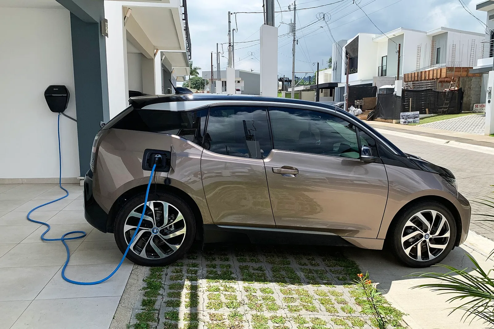
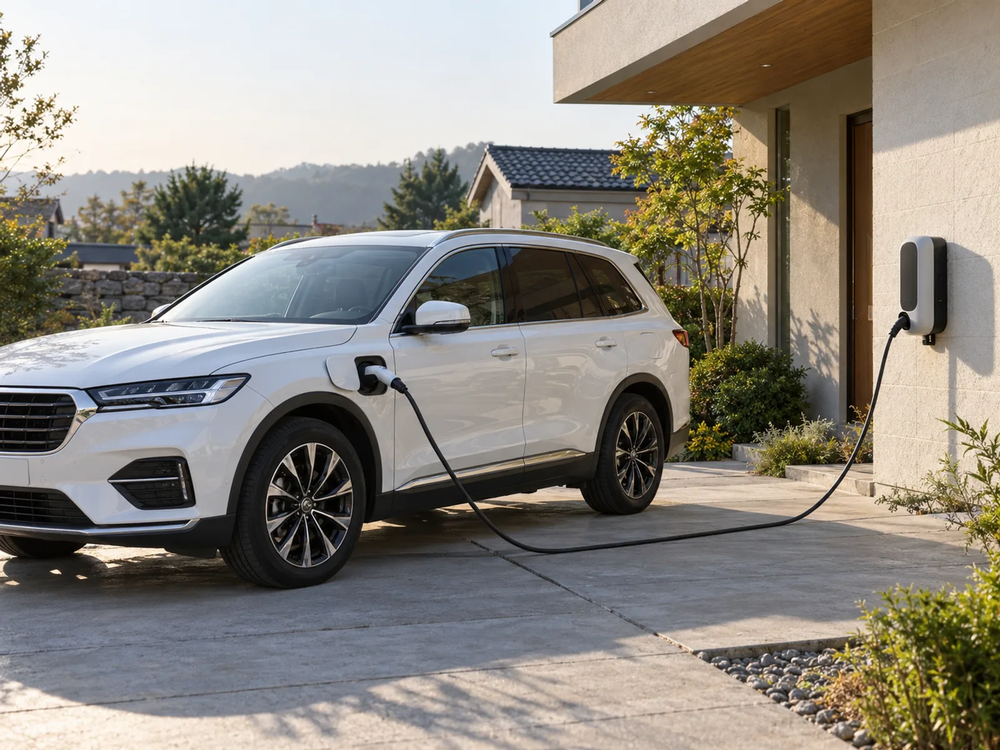
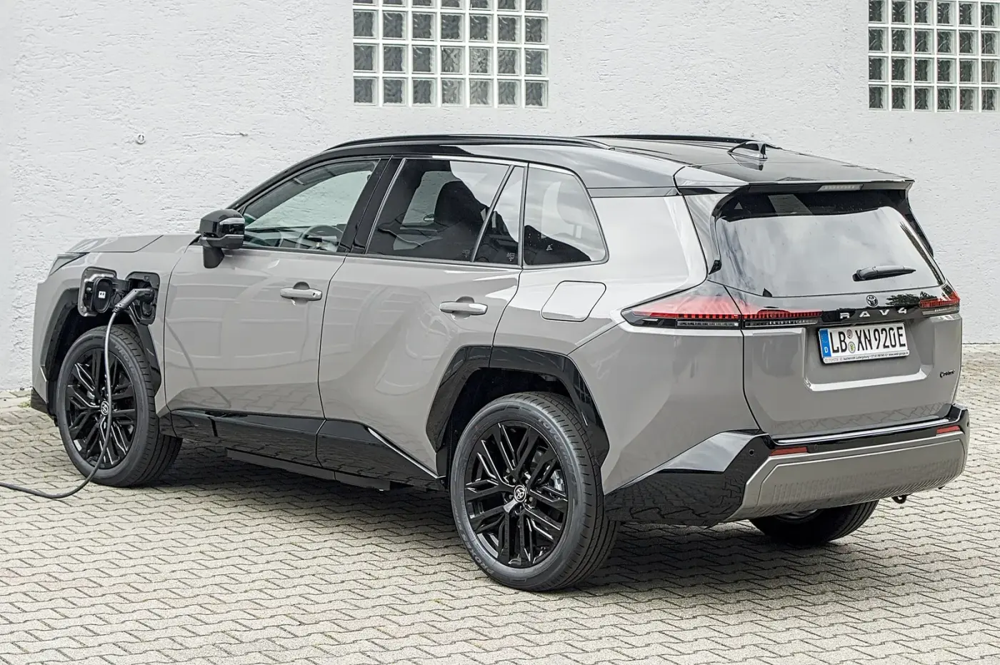
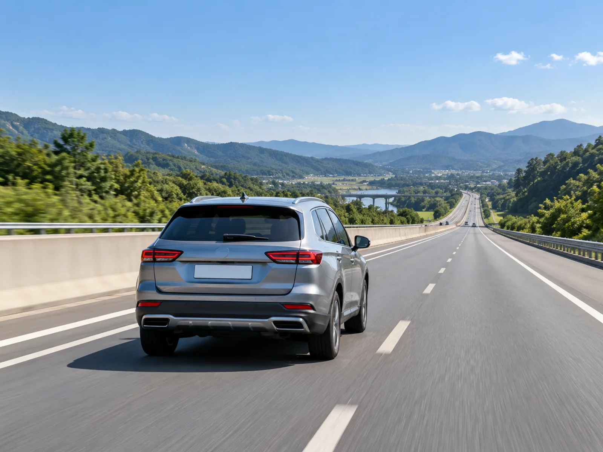
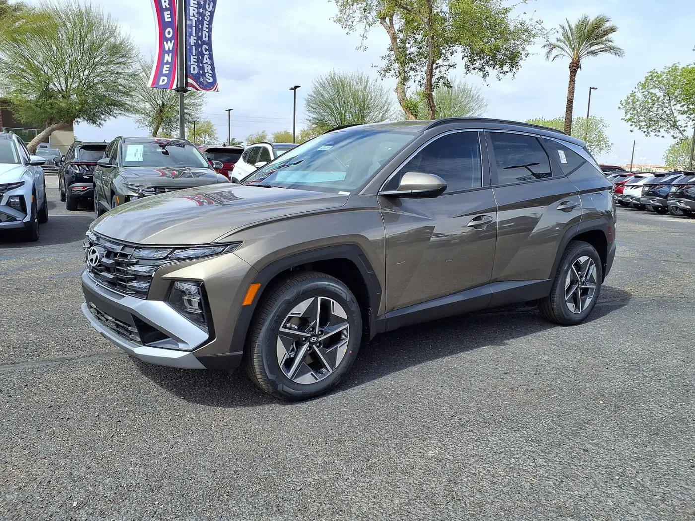
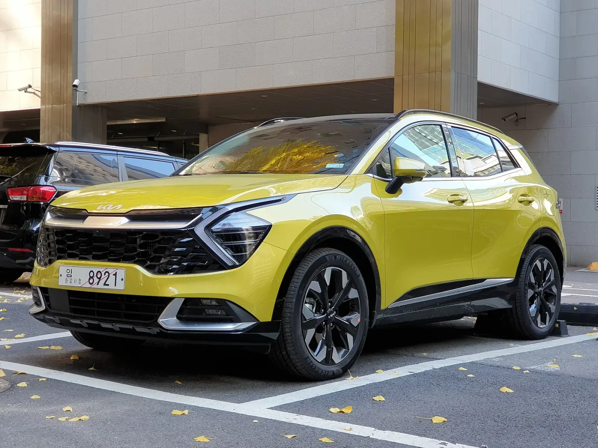
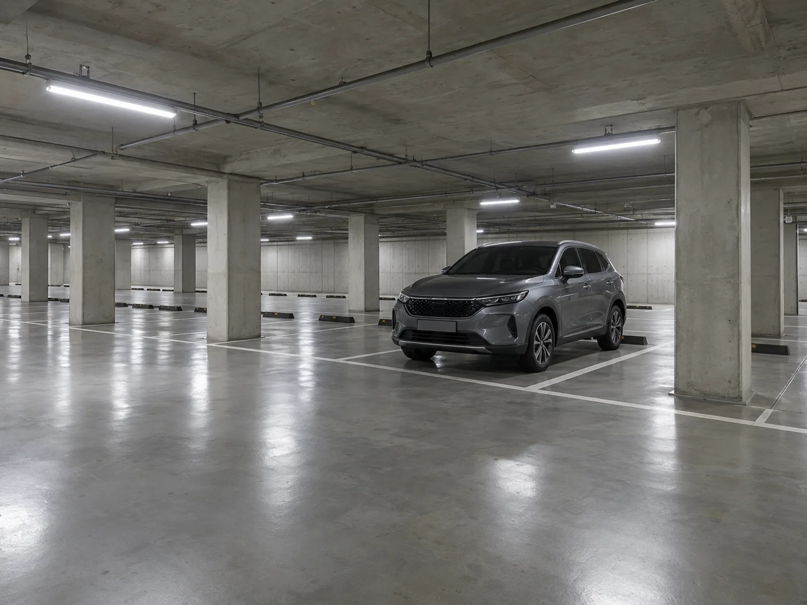
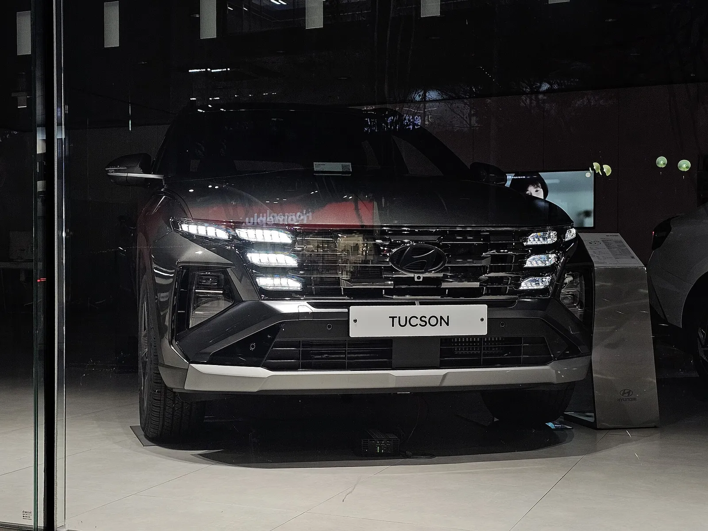
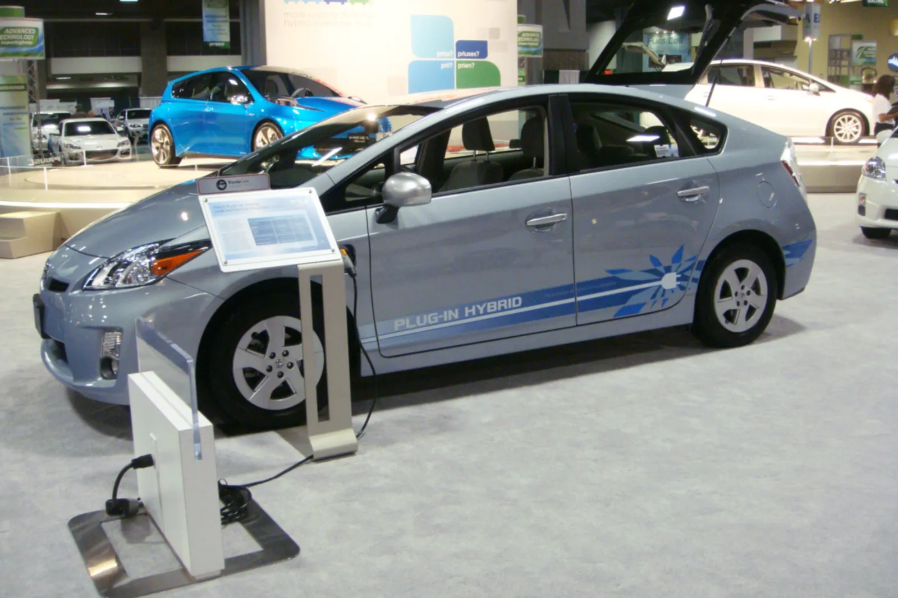
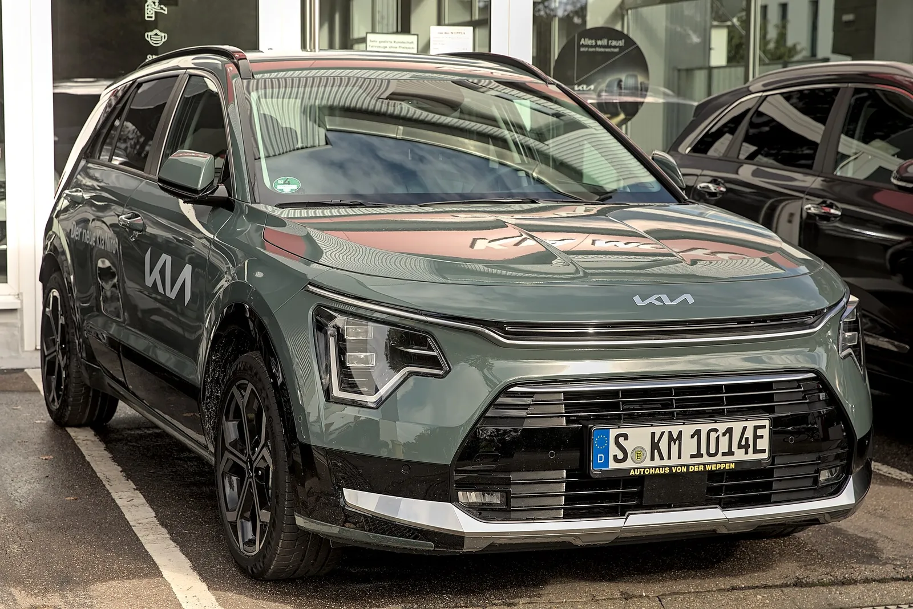

▲ 충전 환경이 없는 운전자에게 하이브리드는 가장 무난한 선택이다 ⓒ HJUdall, Wikimedia Commons (CC0)
"PHEV가 좋다더라, 아니 전기차가 답이다, 그냥 하이브리드가 제일 편하다." 주변 조언은 이렇게 제각각이다. 이유는 간단하다. 세 가지 중 무엇이 맞는지는 차가 아니라 내 주행거리, 내 주차장, 내 장거리 비율이 정하기 때문이다.
현대차는 10월 1일 공개한 2027 투싼 미국형에서 PHEV를 뺐고, 대신 싼타페·제네시스 EREV를 2027년 상반기 북미에 투입한다고 알려졌다. 카프리즘은 이 뉴스를 반복하지 않는다. 대신 2026년 10월 2일 기준 휘발유·충전 단가와 공인 연비·전비로 직접 계산한 연간 연료비 표와, 조건을 넣으면 답이 나오는 선택 판정표를 만들었다. 모든 계산 가정은 본문에 밝혔고, 직접 확인하지 못한 값은 추정으로 표시했다.
1. 먼저 다섯 가지 질문에 답해보자
구매 상담에서 영업사원이 먼저 묻는 것은 예산이지만, 총비용을 가르는 것은 아래 다섯 가지다. 순서대로 답하면 후보가 대부분 정리된다.
| 질문 | 영향 받는 항목 | 답이 "예"일 때 유리한 쪽 |
|---|---|---|
| ① 자택·직장에서 완속 충전이 가능한가 | 전기 주행 비중, 충전 단가 | 전기차·PHEV·EREV |
| ② 연간 주행거리가 2만 km를 넘는가 | 연료비 절감액의 크기 | 절감액이 클수록 차값이 비싼 전동화 차종도 회수 가능 |
| ③ 편도 150km 이상 장거리가 월 2회 이상인가 | 급속 충전 의존도 | 하이브리드·EREV (엔진으로 마무리) |
| ④ 하루 평균 주행이 50km 이하인가 | PHEV·EREV의 전기 주행 완결도 | PHEV·전기차 |
| ⑤ 3~5년 내 차를 바꾸는가 | 감가·세제 변화 위험 | 검증된 하이브리드가 변동 폭이 작음 |
이 중 ①번이 사실상 관문이다. 아파트 주차장 완속 충전기가 부족하거나 입주민 사용 제한이 있다면 PHEV·EREV의 최대 장점인 "저렴한 전기로 출퇴근"이 성립하지 않는다. 단지에 충전기를 설치하는 절차는 아파트 전기차 충전기 설치 가이드에서 정리했다.

▲ 자택 벽걸이 충전기에 연결된 소형 전기차. 이런 환경이 있느냐가 선택의 출발점이다 ⓒ Mariordo, Wikimedia Commons (CC BY-SA 4.0)
2. 계산 전제 — 단가와 연비는 이렇게 잡았다
계산은 투명해야 의미가 있다. 아래 표가 카프리즘이 사용한 가정의 전부다. 수치를 바꾸고 싶다면 이 표만 본인 값으로 바꿔 계산해보면 된다.
| 항목 | 적용값 | 근거 / 성격 |
|---|---|---|
| 휘발유 가격 | 1,850원/L | 오피넷 9월 넷째 주 전국 평균 1,858원, 계산 편의상 1,850원 적용(실제보다 약 0.4% 낮음). 유류세 인하 종료 시 인상 보도가 있어 민감도 별도 계산 |
| 자택 완속 전기 | 250원/kWh | 주택용 저압 누진 구간(120.0·214.6·307.3원) 혼합을 가정한 추정값. 세대 전기 사용량에 따라 크게 달라짐 |
| 공공 완속 / 급속 | 295원 / 330원/kWh | 2026년 8월 개편된 공공 충전 요금 보도(완속 295.0원, 50~100kW 325.6원) 반올림. 단 100kW 이상은 348.4원, 200kW 이상 초급속은 393.1원으로 더 비싸다. 민간 사업자도 더 비쌀 수 있음 |
| 내연기관 가솔린 | 11 km/L | 중형 SUV 실주행 가정(추정) |
| 하이브리드(HEV) | 15 km/L | 신형 5세대 투싼 하이브리드(2026-09-18 공개) 공인 복합 17.4km/L(17인치·2WD)에 실주행 약 14% 감산 |
| 전기차(BEV) | 4.5 km/kWh | 아이오닉 5 스탠다드 2WD 공인 5.1km/kWh에 충전 손실·실주행 약 12% 감산 |
| PHEV | 전기 4.0 km/kWh / 엔진 14 km/L | 현대차·기아는 국내에서 PHEV를 판매하지 않아(더퍼블릭 2026-06-24 보도) 신형 투싼 PHEV의 국내 인증 전기주행거리는 확인하지 못했다. 구형 해외 기준 약 53~56km(EPA 53.1km, WLTP 56km)를 참고했으며, 아래 전기 비율 가정의 근거다. 연비는 추정 |
| EREV | 전기 4.0 km/kWh / 발전 주행 12 km/L | 국내 출시·공인 수치 없음. 구조상 엔진 효율이 낮을 것이라는 카프리즘 추정 |
📍 EREV 수치는 "가정 모델"이다
싼타페 EREV는 주유와 완충 시 약 965km, 제네시스 EREV는 약 1,030km급이 목표로 발표됐지만 한국 판매 계획도 공인 전비도 공개되지 않았다. 이 글의 EREV 행은 "배터리가 큰 PHEV처럼 움직인다"는 가정으로 만든 참고값이며, 출시 후 공인 수치가 나오면 달라질 수 있다.
3. km당 연료비 — 충전 환경이 갈라놓는다

▲ 단독주택 마당 충전을 그린 예시 이미지. 자택 완속이 있으면 PHEV의 전기 주행 비율이 올라간다 ⓒ CarPrism (AI 생성 이미지)
하이브리드·가솔린은 연료 단가를 연비로 나누면 끝이지만, PHEV·EREV는 전기로 달리는 비중(전기 주행 비율)이 결과를 좌우한다. 계산식은 다음과 같다.
km당 비용 = 전기 비율 × (전기 단가 ÷ 전비) + (1 − 전기 비율) × (휘발유 단가 ÷ 연비)
전기 비율은 환경별로 세 가지 시나리오를 가정했다. 비율은 카프리즘 추정이며 실측이 아니다. PHEV 전기 비율은 구형 기준 전기 주행거리 약 53~56km 안에서 하루 주행이 끝나는 경우를 전제로 한 가정이다.
| 시나리오 | 주행 환경 | PHEV 전기 비율 | EREV 전기 비율 |
|---|---|---|---|
| A | 자택 완속 있음 + 출퇴근 위주 | 75% | 90% |
| B | 자택 완속 있음 + 장거리 잦음 | 50% | 70% |
| C | 충전 거의 못 함 | 10% | 10% |
| 차종 / 시나리오 | 계산식 | km당 비용 |
|---|---|---|
| 가솔린 11km/L | 1,850 ÷ 11 | 약 168원 |
| 하이브리드 15km/L | 1,850 ÷ 15 | 약 123원 |
| 전기차 — 자택 완속 | 250 ÷ 4.5 | 약 56원 |
| 전기차 — 공공 완속 | 295 ÷ 4.5 | 약 66원 |
| 전기차 — 급속 | 330 ÷ 4.5 | 약 73원 |
| PHEV A | 0.75×62.5 + 0.25×132.1 | 약 80원 |
| PHEV B | 0.5×62.5 + 0.5×132.1 | 약 97원 |
| PHEV C | 0.1×62.5 + 0.9×132.1 | 약 125원 |
| EREV A | 0.9×62.5 + 0.1×154.2 | 약 72원 |
| EREV B | 0.7×62.5 + 0.3×154.2 | 약 90원 |
| EREV C | 0.1×62.5 + 0.9×154.2 | 약 145원 |
눈여겨볼 대목은 시나리오 C의 PHEV가 하이브리드(123원)보다 비싸다(125원)는 점이다. 충전을 못 하면 무거운 배터리를 싣고 다니는 비용만 낸다. 반대로 EREV는 충전을 못 할 때 발전 주행 효율이 낮아 가장 불리한 구조로 계산됐다(추정).

▲ 주차 구역에서 충전 중인 아이오닉 5. 충전기가 어디에 있느냐가 실제 전기 주행 비율을 결정한다 ⓒ 4300streetcar, Wikimedia Commons (CC BY 4.0)
✅ 이 표를 읽을 때 주의할 점
· 전기 비율은 하루 주행거리가 전기 주행 가능 거리 안에 들어오는 날의 비중에 가깝다. 매일 충전하지 않으면 시나리오 B·C로 내려간다
· 겨울철 저온에서는 전비가 떨어진다. 위 값은 연평균 가정이며 월별 편차는 반영하지 않았다
· 보험료·정비비·감가는 포함하지 않았다. 5년 유지비는 니로 EV·니로 하이브리드 5년 유지비 계산 기사에서 따로 다뤘다
월 충전 횟수로 본 전기 주행 비율 — PHEV 시뮬레이션. 위 시나리오 비율(75%·50%·10%)이 현실에서 어느 정도 충전 빈도인지 보여주는 보조 계산이다. 가정은 세 가지다. ① 완충 1회로 전기 주행 45km(구형 공인 53~56km에서 약 15~20% 감산한 카프리즘 추정), ② 한 달에 충전한 횟수만큼만 전기로 달린다, ③ 전기 비율 = min(상한, 월 충전 횟수 × 45km ÷ 월 주행거리). 월 주행거리는 연 20,000km 기준 약 1,667km, 연 12,000km 기준 1,000km이며, 12,000km 쪽은 하루 주행이 45km를 넘는 날이 있으므로 전기 비율 상한을 90%로 뒀다. 연료비 단가는 앞의 가정(전기 250원/kWh÷4.0km/kWh, 휘발유 1,850원/L÷14km/L)을 그대로 쓴다.
| 월 충전 횟수 | 연 20,000km (HEV 약 247) | 연 12,000km (HEV 약 148) | ||||
|---|---|---|---|---|---|---|
| 전기 비율 | PHEV 연료비 | HEV 대비 | 전기 비율 | PHEV 연료비 | HEV 대비 | |
| 0회 | 0% | 264 | 약 18 추가 | 0% | 159 | 약 11 추가 |
| 4회 | 11% | 249 | 약 3 추가 | 18% | 144 | 약 4 절감 |
| 8회 | 22% | 234 | 약 12 절감 | 36% | 128 | 약 20 절감 |
| 12회 | 32% | 219 | 약 28 절감 | 54% | 113 | 약 35 절감 |
| 16회 | 43% | 204 | 약 43 절감 | 72% | 98 | 약 50 절감 |
| 20회 | 54% | 189 | 약 58 절감 | 90% | 83 | 약 65 절감 |
| 25회 | 68% | 170 | 약 76 절감 | 90% | 83 | 약 65 절감 |
| 30회 | 81% | 151 | 약 95 절감 | 90% | 83 | 약 65 절감 |
이 표에서 읽을 점은 두 가지다. 첫째, PHEV가 하이브리드와 연료비가 같아지는 전기 비율은 약 12.6%다(식: (휘발유 132.1원 − HEV 123.3원) ÷ (132.1원 − 전기 62.5원)). 이는 연 20,000km 기준 월 약 4.7회, 12,000km 기준 월 약 2.8회 충전에 해당한다. 한 달에 3~5번 이하로 꽂는다면 PHEV는 하이브리드보다 비싸다. 둘째, 시나리오 A(전기 75%)를 달성하려면 연 20,000km 기준 월 약 28회, 거의 매일 충전해야 한다. 연 12,000km 기준으로는 월 약 17회다. "자택 충전기가 있다"와 "매일 꽂는다"는 별개이며, 후자가 습관이 되지 않으면 시나리오 B에 가까워진다.

▲ 충전 케이블을 꽂은 토요타 RAV4 PHEV. 전기 비율은 이렇게 얼마나 자주 꽂느냐로 갈린다 ⓒ Alexander Migl, Wikimedia Commons (CC BY-SA 4.0)
4. 연간 주행거리별 연료비 — 1만 2천 km, 2만 km, 3만 km

▲ 장거리 고속도로 주행을 그린 예시 이미지. 장거리 비중이 높으면 연 주행거리가 늘고 선택 기준이 달라진다 ⓒ CarPrism (AI 생성 이미지)
위 km당 비용에 연간 주행거리를 곱한 결과다. 단위는 만 원이며 10만 원 단위로 반올림했다.
| 차종 / 시나리오 | 12,000km | 20,000km | 30,000km |
|---|---|---|---|
| 가솔린 11km/L | 약 202 | 약 336 | 약 505 |
| 하이브리드 15km/L | 약 148 | 약 247 | 약 370 |
| 전기차 — 자택 완속 | 약 67 | 약 111 | 약 167 |
| 전기차 — 공공 완속 | 약 79 | 약 131 | 약 197 |
| 전기차 — 급속 | 약 88 | 약 147 | 약 220 |
| PHEV A (자택·출퇴근) | 약 96 | 약 160 | 약 240 |
| PHEV B (자택·장거리) | 약 117 | 약 195 | 약 292 |
| PHEV C (충전 못 함) | 약 150 | 약 250 | 약 376 |
| EREV A (자택·출퇴근) | 약 86 | 약 143 | 약 215 |
| EREV B (자택·장거리) | 약 108 | 약 180 | 약 270 |
| EREV C (충전 못 함) | 약 174 | 약 290 | 약 435 |
| 차종 / 시나리오 | 연료비 | 하이브리드 대비 | 비고 |
|---|---|---|---|
| 전기차 — 자택 완속 | 약 111 | 약 136 절감 | 자택 충전이 전제 |
| EREV A | 약 143 | 약 103 절감 | 추정 모델 |
| PHEV A | 약 160 | 약 87 절감 | |
| PHEV B | 약 195 | 약 52 절감 | 장거리 비중 높음 |
| PHEV C | 약 250 | 약 3 추가 부담 | 충전 못 하면 역전 |
📍 연 1만 2천 km 이하라면 격차가 작다
연 12,000km만 타는 운전자는 PHEV A와 하이브리드의 연료비 차이가 약 52만 원에 그친다. 차값 차액이 500만 원이면 회수에 약 9.6년이 걸린다는 계산이다. 주행거리가 짧을수록 비싼 차종의 경제성은 연료비로는 설명되지 않는다.

▲ 현행 투싼 PHEV(미국 판매 사양). 미국에서는 2027년형부터 판매하지 않는다 ⓒ HJUdall, Wikimedia Commons (CC0)
5. 차값 차액 회수 기간과 세제·보조금
연료비가 낮아도 차값이 비싸면 소용없다. 하이브리드 대비 차값 차액을 500만 원, 1,000만 원으로 가정해 20,000km 기준 회수 기간을 계산했다. 차액은 모델마다 다르므로 예시일 뿐이다. 회수 기간 = 차액 ÷ 연 절감액이다.
| 차종 / 시나리오 | 연 절감액 | 차액 500만 원 | 차액 1,000만 원 |
|---|---|---|---|
| 전기차 — 자택 완속 | 약 136만 원 | 약 3.7년 | 약 7.4년 |
| EREV A (추정) | 약 103만 원 | 약 4.8년 | 약 9.7년 |
| PHEV A | 약 87만 원 | 약 5.8년 | 약 11.5년 |
| PHEV B | 약 52만 원 | 약 9.6년 | 약 19.2년 |
여기에 정부 지원이 붙는다. 다만 차종별로 크게 다르다.
| 구분 | 내용 | 확인 수준 |
|---|---|---|
| 전기차 국비 | 기후에너지환경부 2026년 지침 기준 국고 최대 580만 원 + 내연차 전환지원금 100만 원. 차량 가격이 5,300만 원을 넘으면 지원이 절반으로 줄어든다(정책브리핑 기준 5,300만 원 이하 100%, 8,500만 원 미만 50%이며, 2027년에는 각각 5,000만·8,000만 원으로 낮아질 예정). 580만 원은 중·대형 기준이며 8,500만 원 이상 차량은 지원이 없다 | 정부 지침 + 언론 해석 혼재, 차종별 금액은 무공해차 통합누리집 확인 필요 |
| 하이브리드 개별소비세 | 감면 한도 70만 원(교육세·부가세 연동 시 실질 약 100만 원). 2026년 12월 31일까지 제조장·보세구역 반출분 적용, 2027년 이후 종료는 정부 2026 세제개편안(8/3) 기준이며, 10월 2일 현재 국회 확정 보도는 찾지 못했다(헤럴드경제는 입법예고·국회 제출 단계로 보도) | 종료 여부는 국회 확정 전 보도가 섞여 있어 계약 전 재확인 필요 |
| 하이브리드 취득세 | 감면은 2024년 12월 31일 종료 | 복수 보도 일치 |
| PHEV 구매보조금 | 2026년 현재 국비 보조금 대상이 아닌 것으로 보도됨. PHEV 국비 보조금(최대 500만 원)은 2021년 폐지됐고(이데일리), "PHEV는 국내 전기차 보조금 지급 대상이 아니다"(파이낸셜뉴스 2026-07-06)는 서술과 "2021년 보조금 폐지 뒤 국내 PHEV 판매를 접었다"(더퍼블릭 2026-06-24)는 서술이 일치한다. 다만 한국에너지공단·무공해차 통합누리집의 PHEV 제외 조항 원문은 직접 열람하지 못했다. 일부 지자체 별도 지원 가능성은 확인 필요. 일부 블로그의 300~500만 원 지급 주장은 공식 근거를 확인하지 못함 | 언론 3건 일치, 공식 원문 미열람. 단정 불가, 지자체·무공해차 통합누리집 공고 확인 필요 |
EREV는 국내에서 어떤 분류·지원을 받을지 정해진 바가 없다. 정책이 정해지기 전까지 이 글의 EREV 경제성은 보조금 0원 가정이다.
| 차종 / 가정 | 연 절감액 | 차액 500만 원 | 차액 500만 원 + HEV 감면 소멸 | 차액 1,000만 원 | 차액 1,000만 원 + HEV 감면 소멸 |
|---|---|---|---|---|---|
| 전기차 — 자택 완속, 국비 0원 | 약 136만 원 | 3.7 | 3.0 | 7.4 | 6.6 |
| 전기차 — 국비 300만 원 가정 | 약 136만 원 | 1.5 | 0.7 | 5.2 | 4.4 |
| 전기차 — 국비 580만 원 가정(상한) | 약 136만 원 | 즉시 상쇄 | 즉시 상쇄 | 3.1 | 2.4 |
| EREV A (추정, 보조금 0) | 약 103만 원 | 4.8 | 3.9 | 9.7 | 8.7 |
| PHEV A (보조금 0) | 약 87만 원 | 5.8 | 4.6 | 11.5 | 10.4 |
| PHEV B (보조금 0) | 약 52만 원 | 9.6 | 7.7 | 19.2 | 17.3 |
계산식은 회수 기간 = max(0, 차값 차액 − 국비 보조금 − HEV 감면 소멸분) ÷ 연 절감액이다. "HEV 감면 소멸"은 하이브리드 개별소비세 감면(실질 약 100만 원)이 사라져 하이브리드 가격이 그만큼 오른다고 가정한 열이다. 제조사가 일부를 흡수하면 실제 효과는 더 작다. 전기차 국비 300만·580만 원은 차종·가격·지자체에 따라 달라지는 예시값이며, 지자체 보조금은 넣지 않았다. 정리하면 국비를 받는 전기차는 회수 기간이 눈에 띄게 짧아지고, 국비가 없는 PHEV·EREV는 개소세 감면 소멸로 약 1년 안팎 단축되는 데 그친다. 하이브리드 감면이 사라지면 PHEV와의 가격 차이가 줄지만, 충전 습관이 안 받쳐 주면 그 효과도 의미가 없다. 보조금 공백기의 할인 경쟁 흐름은 전기차 보조금 공백기 할인 경쟁 기사에서 볼 수 있다.

▲ 스포티지 PHEV(NQ5e) 시험 차량. 현대차·기아는 PHEV를 해외에서만 판매하고 국내에서는 팔지 않는다 ⓒ Damian B Oh, Wikimedia Commons (CC BY-SA 4.0)
전기차 보조금 지침 원문은 아래에서 확인할 수 있다. 2026 전기차 보조금 업무처리지침 보도자료 바로가기
▲ 싼타페 하이브리드(MX5). 싼타페 EREV는 이 차체를 바탕으로 2027년 상반기 북미에 투입될 예정이다 ⓒ Damian B Oh, Wikimedia Commons (CC BY-SA 4.0)
6. 선택 판정표 — 조건을 넣으면 답이 나온다

▲ 충전기가 없는 아파트 지하주차장을 그린 예시 이미지. 이런 환경에서는 충전 의존이 낮은 하이브리드가 무난하다 ⓒ CarPrism (AI 생성 이미지)
앞의 계산을 한 장짜리 판정표로 압축했다. 본인에게 가장 가까운 행을 찾아보자. 판정은 연료비 계산과 편의성을 함께 본 카프리즘의 의견이며, 차종별 가격 차액이 크게 다르면 달라질 수 있다.
| 자택 완속 | 연 주행거리 | 장거리 비율 | 1순위 | 2순위 | 피할 선택 |
|---|---|---|---|---|---|
| 있음 | 2만 km 이상 | 낮음 | 전기차 | PHEV | 가솔린 |
| 있음 | 2만 km 이상 | 높음 | PHEV·EREV(출시 시) | 하이브리드 | 순수전기(급속 의존) |
| 있음 | 1.2만 km 이하 | 낮음 | 전기차(차액 작을 때) / 하이브리드 | PHEV | 차액 큰 전동화 차종 |
| 없음(공공 충전) | 2만 km 이상 | 낮음 | 하이브리드 | 전기차(공공 완속 가능 시) | PHEV |
| 없음 | 2만 km 이상 | 높음 | 하이브리드 | 가솔린 | PHEV, 전기차 |
| 없음 | 1.2만 km 이하 | 어느 쪽이든 | 하이브리드 또는 가솔린 | — | PHEV·EREV |
| 있음 | 3만 km 이상 | 어느 쪽이든 | 전기차(주행거리 확보 시) | PHEV | 가솔린 |
✅ 판정표 읽는 요령
· "장거리 비율 높음"은 편도 150km 이상을 월 2회 이상 달리는 경우를 뜻한다
· "있음"은 내 주차 구획에서 쓸 수 있는 완속 충전기가 있다는 뜻이다. 단지 내 공용 충전기 1~2대를 기대하는 것은 "없음"에 가깝다
· 차액이 1,000만 원을 넘는 차종은 위 회수 기간표로 다시 확인하자
· 하이브리드 개별소비세 감면 종료 전 출고 가능 여부도 변수다

▲ 전시장에 놓인 구형(NX4) 투싼의 정면. 미국 사양 기준 사진이며, 충전 환경이 없는 운전자에게 무난한 선택지로 꼽히는 하이브리드의 대표 차종이다 ⓒ Wikimedia Commons
7. 현대차 EREV 계획은 내 선택에 어떤 의미인가
EREV 자체는 별도 기사에서 자세히 정리했다. 여기서는 소비자 입장에서 무엇을 바꾸는지만 짚는다. 먼저 사실 관계다. 현대차 임원은 2027 투싼 미국형에서 PHEV를 뺀 이유를 "수요가 충분하지 않았다"고 설명했고, 현대차그룹은 2027년 상반기 싼타페·제네시스 EREV를 북미에 출시한다고 공식화했다. 상세 내용은 2027 투싼 미국형 PHEV 단종 기사와 현대차그룹 EREV 라인업 기사를 참고하자.
| 사실(확인됨) | 소비자 관점 해석(카프리즘) |
|---|---|
| 미국 투싼 PHEV는 2027년형에서 단종 | 미국 사정이며, 현대차·기아는 현재 국내에서 PHEV를 팔지 않아(더퍼블릭 6/24) 국내 인증 수치 자체를 확인하지 못했고(구형 해외 기준 약 53~56km), 국내 투입 계획도 확인하지 못함 |
| 싼타페·제네시스 EREV는 2027년 상반기 북미 출시 | 한국 출시 시점·가격·보조금 미확정. 지금 계약하는 차의 선택지에는 없음 |
| EREV는 배터리가 순수전기의 절반 이하, 주행거리 965~1,030km급 목표 | 충전 인프라가 약한 운전자에게 "전기 위주 + 장거리 안심"을 줄 수 있으나, 충전을 못 하면 발전 주행이 늘어 연료비가 불리할 수 있음(추정) |
📍 "PHEV 단종"을 한국에 그대로 적용하지 말자
북미에서 PHEV가 외면받은 이유는 충전 환경·가격·세제 등 시장별 요인이 겹친 결과로 해석된다. 한국은 아파트 거주 비율이 높아 자택 충전 가능 여부가 더 극단적으로 갈린다. 충전기가 있으면 PHEV가 합리적이고, 없으면 사실상 하이브리드보다 못하다는 이 글의 계산과 같은 구조다. 국산 PHEV가 없는 국내 시장에서 수입 PHEV가 가격을 어떻게 잡는지는 BYD 씨라이언6 사륜구동 인증 기사를 참고하자.

▲ 플러그인 하이브리드는 충전기를 꽂을 수 있을 때 비로소 PHEV의 이점이 나온다 ⓒ Mariordo, Wikimedia Commons (CC BY-SA 3.0)
8. 휘발유값이 오르면 판정이 바뀔까
유류세 인하는 11월 30일까지 연장된 것으로 보도됐고, 완전 종료 시 리터당 약 122원, 인하율을 5%p씩 단계 환원하면 약 40원 수준 인상이라는 추산이 있다(매일신문 9/27 보도 기준). 아래 1,980원/L는 완전 종료를 가정한 최악 가정으로 20,000km 연료비를 다시 계산했다.
| 차종 | 1,850원/L | 1,980원/L (최악 가정) | 차이 |
|---|---|---|---|
| 가솔린 11km/L | 약 336만 원 | 약 360만 원 | +약 24만 원 |
| 하이브리드 15km/L | 약 247만 원 | 약 264만 원 | +약 17만 원 |
| PHEV A (전기 75%) | 약 160만 원 | 약 165만 원 | +약 5만 원 (추정) |
| 전기차 — 자택 완속 | 약 111만 원 | 약 111만 원 | 변동 없음 |
휘발유값이 오르면 하이브리드 대비 전기차의 절감폭은 커지지만 판정표의 순서는 바뀌지 않는다. 판정을 뒤집는 것은 휘발유값보다 충전 환경과 장거리 비율이다. 한국 하이브리드 라인업의 가격·연비는 국산 하이브리드 17종 가격·연비 지도에서 확인할 수 있다.

▲ 니로 PHEV(SG2). 같은 차종에 하이브리드·PHEV·전기차가 함께 있는 경우가 많아 충전 환경이 선택을 가른다 ⓒ Alexander Migl, Wikimedia Commons (CC BY-SA 4.0)
9. 요약
자택 완속 충전이 가능한지가 선택의 관문이다. 가능하다면 연 2만 km 기준으로 전기차가 하이브리드보다 연 약 136만 원, PHEV(출퇴근 위주)가 약 87만 원, EREV(추정)가 약 103만 원 연료비를 아낀다. 가능하지 않다면 PHEV는 하이브리드보다 오히려 약 4만 원 불리하다.
차값 차액 500만 원을 가정하면 전기차는 약 3.7년, PHEV는 약 5.8년 만에 회수되고, 연 1.2만 km 이하라면 회수가 9년 이상으로 길어진다. 하이브리드 개별소비세 감면(실질 약 100만 원)은 2026년 12월 31일 반출분까지로 보도돼 출고 시점도 변수다.
EREV는 아직 국내 선택지가 아니다. 계산에 쓴 EREV 수치는 추정이며, PHEV는 국비 보조금 대상이 아닌 것으로 보도되지만 공식 원문은 열람하지 못했고, EREV 국내 지원은 정해진 바가 없다. 개소세 감면 종료도 국회 확정 보도를 찾지 못했다. 계약 직전에는 본인의 충전 환경과 최신 세제를 다시 확인하자.